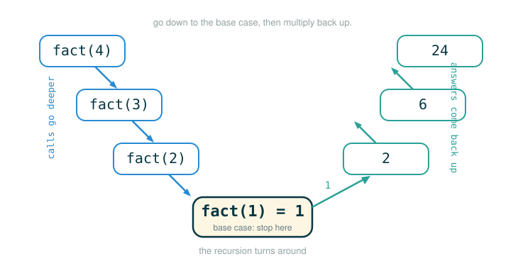

1.7 Recursive Functions and the Shape of a Smaller Problem
Recursion is the idea that a function can solve a problem by asking for help on a smaller version of the same problem. By the end of this lesson you will be able to do four things: state the formal definition of a recursive function, read the three structural parts every recursive function shares, trace a recursive call by following its frames as they pile up and then unwind, and use the recursive leap of faith to reason about a function without simulating every step in your head.
That first sentence sounds circular, and the circularity is the part that trips people up. The safe way to hold it in your head is a four-step contract:
- Stop immediately for the simplest possible input.
- Otherwise, make the input smaller.
- Trust the smaller call to return its answer.
- Combine that smaller answer with the piece you handled now.
The goal is not to memorize recursion as a trick. The goal is to see the machine model in enough detail that recursive code stops looking opaque and starts looking mechanical.
A Stack of Smaller Tasks
Imagine you are sorting a tall stack of papers. If there is only one paper, you are already done; there is nothing to sort. If there are many papers, you can do three things: handle the top paper now, hand the rest of the stack to the same sorting process, and then combine your one paper with the completed rest of the stack once that process hands it back.
That is recursion in plain language. Notice what it does not require: a new kind of Python syntax. A recursive function uses the same function-call machinery you already know from earlier lessons. The only new thing is that one call sets off another call to the very same function, on a slightly smaller pile.
The Formal Definition
Here is the precise version of the idea.
A function is called recursive if the body of the function calls the function itself, either directly or indirectly. "Directly" means the function literally names itself inside its own body. "Indirectly" means it calls some other function that eventually calls back to it; that second pattern is called mutual recursion, and a sibling lesson covers it. Either way, executing the body of a recursive function may require applying that same function again, on a smaller input, before the original call can finish.
The First Model: Summing Digits
We want a function that computes the sum of the digits of a positive integer. For example, the digits of 18117 add up like this:
The thing that makes this a natural fit for recursion is that we already own two arithmetic tools that peel a number apart one digit at a time:
n % 10gives the last digit ofn.n // 10gives everything except the last digit.
You can confirm both at the prompt:
>>> 18117 % 10
7
>>> 18117 // 10
1811So the last digit of 18117 is 7, and the rest of the number is 1811. That single fact is the whole recursive idea in miniature: the smaller problem hiding inside sum_digits(18117) is sum_digits(1811). The current call takes responsibility for the last digit, 7. The recursive call takes responsibility for the digits of 1811. Add those two results and you have the answer.
Here is the function, exactly as the original text writes it:
# (1)
def sum_digits(n):
"""Return the sum of the digits of positive integer n."""
if n < 10:
return n
else:
all_but_last, last = n // 10, n % 10
return sum_digits(all_but_last) + last
The line all_but_last, last = n // 10, n % 10 is a single assignment statement that binds two names at once: all_but_last gets n // 10, and last gets n % 10. Then the function returns the sum of the recursive call on all_but_last and the digit last.
This one definition handles inputs of any size, including numbers far larger than you would ever sum by hand:
>>> sum_digits(9)
9
>>> sum_digits(18117)
18
>>> sum_digits(9437184)
36
>>> sum_digits(11408855402054064613470328848384)
126Following the Line: The def Statement Header
A recursive function still begins with an ordinary def header. It earns the name "recursive" only because of what its body does, not because of any special header syntax. Read the first line of (1) one piece at a time:
def sum_digits(n):
├─ def ............... defines a new function
├─ sum_digits ....... names the function so the body can call it again
├─ (n) .............. declares one parameter, the number to process
├─ : ................ starts the indented body that belongs to this header
└─ defines the function sum_digits, which can call itself by nameThe detail that makes recursion possible is in the second row: because the function has a name, its own body is allowed to write sum_digits(...) and reach itself. There is no separate machinery for this. The name binding you create with def is the same binding the recursive call looks up.
The Anatomy of a Recursive Function
Almost every recursive function you read will have the same three parts. Once you can point to all three, the function stops being mysterious.
- The
defstatement header, which gives the function a name so it can call itself. - The base case: a conditional that defines the answer for the inputs simplest to process, so the function can stop.
- The recursive case: one or more calls to the function itself on a smaller input, whose result gets combined with the current step.
Reading the body of (1) against that anatomy looks like this:
def sum_digits(n):
├─ if n < 10: return n .......................... base case: a single-digit
│ number is its own digit sum
├─ all_but_last, last = n // 10, n % 10 ......... split off the last digit and
│ the rest of the number
└─ return sum_digits(all_but_last) + last ....... recursive case: solve the
smaller number, add the last digitKeep this template in mind whenever you write your own recursive function: name it, give it a base case, and make the recursive call smaller.
The Base Case
The base case is the input simple enough that you can answer it without any further recursion. For sum_digits, a one-digit number is already its own digit sum:
That is why the body of (1) opens with a conditional that checks n < 10 and returns n directly. Without that base case, the function would keep calling itself on smaller and smaller numbers forever, never stopping, until Python gives up and raises a RecursionError. The base case is the floor that the recursion lands on.
The Recursive Case
The recursive case has one non-negotiable job: it must move the input closer to the base case. For sum_digits, every call strips off one digit with n // 10, so the number shrinks on each step. Trace sum_digits(738) by hand to feel the shrink:
sum_digits(738)
= sum_digits(73) + 8
= (sum_digits(7) + 3) + 8
= (7 + 3) + 8
= 18The argument marches steadily toward a single digit:
738 -> 73 -> 7That shrinking path is the safety rope of recursion. As long as every recursive call is strictly smaller and the base case catches the smallest input, the function is guaranteed to stop.
Tracing the Frames for sum_digits(738)
No new evaluation rules are needed to run a recursive function. The environment model you already know handles it: each call to sum_digits creates its own local frame, with its own bindings for n, all_but_last, and last. Because the calls are nested, the frames pile up before any of them can return.
When Python evaluates sum_digits(738), it first builds the frames on the way down:
Global frame
sum_digits -> function
Frame A: sum_digits(n=738)
all_but_last = 73
last = 8
waiting for sum_digits(73)
Frame B: sum_digits(n=73)
all_but_last = 7
last = 3
waiting for sum_digits(7)
Frame C: sum_digits(n=7)
base case: 7 < 10, returns 7Frame A cannot finish its return until the call it is waiting on produces a value, and the same is true of Frame B. Only Frame C, the base case, can return on its own. Once it does, the values flow back up and the frames unwind in reverse order:
Frame C returns 7
Frame B returns 7 + 3 = 10
Frame A returns 10 + 8 = 18The shape to remember: recursive calls go down, building frames that each wait on the next, until the base case turns the chain around and answers flow back up.
Factorial: A Second Model
Factorial means multiplying a positive integer by every positive integer below it:
The recursive structure falls right out of the algebra. The factorial of n is just n times the factorial of the next number down:
That equation is already a base case plus a recursive case in disguise: the recursion stops at 1!, which is 1, and otherwise multiplies n by fact(n - 1). Here is the function exactly as the original text writes it:
# (2)
def fact(n):
if n == 1:
return 1
else:
return n * fact(n-1)
Read its body against the same three-part anatomy:
def fact(n):
├─ if n == 1: return 1 .................. base case: 1! is 1, stop here
└─ return n * fact(n-1) ................. recursive case: n times the
factorial of the next number downFor fact(4), the calls nest exactly the way sum_digits did, with each multiplication left pending until the call inside it returns:
fact(4)
4 * fact(3)
4 * (3 * fact(2))
4 * (3 * (2 * fact(1)))
4 * (3 * (2 * 1))
24The shape of that trace is a V: the calls slide down one side to the base case, and then the answers climb back up the other side as each pending multiplication finally runs.

The Recursive Leap of Faith
When you write fact, do not try to mentally simulate every future call at once. Picturing fact(4) calling fact(3) calling fact(2) calling fact(1) all in your head at the same time overloads working memory, and it is unnecessary. There is a cleaner way to convince yourself the function is correct, and it is essentially a proof by induction. (Induction is just a name for this style of reasoning — you do not need to know it in advance; the three checks below are all it means here.)
Check three claims, and nothing more:
- The base case is correct:
fact(1)returns1, and1!really is1. - The recursive call is strictly smaller:
fact(n - 1)is closer to the base case thanfact(n). - The combination is correct: assuming
fact(n - 1)correctly returns(n-1)!, thenn * fact(n - 1)correctly returnsn!.
That third claim is the recursive leap of faith. You assume the smaller call already works, and you only verify the one step in front of you. It is not blind faith; it is structured reasoning. If the base case is right and every step is right under the assumption that the smaller call is right, then by induction every call is right.
Recursion Versus Iteration
You have already met a tool that repeats work: the while loop. Factorial can be written iteratively, and comparing the two versions shows what recursion actually buys you. Here is the iterative version exactly as the original text writes it:
# (3)
def fact_iter(n):
total, k = 1, 1
while k <= n:
total, k = total * k, k + 1
return total
>>> fact_iter(4)
24Both functions compute the same value, but they build it from opposite ends. The iterative fact_iter starts at the base case and works upward: it keeps a running total and a counter k, and on each pass through the loop it multiplies the next term in and advances the counter. It must carry that state by hand. At the moment when k is 3 and total is 2, those two names together record both the work already completed and the work still remaining.
The recursive fact keeps none of that state. It builds the result from the final term, n, and the result of the simpler problem fact(n - 1), and it leans on the ordinary rules for evaluating call expressions to remember where it was. The two extra names that iteration needs, total and k, simply do not appear in the recursive version; the pending multiplications living in the waiting frames play that bookkeeping role instead. That is the trade: iteration makes the accumulating state explicit in named variables, while recursion lets the structure of the calls carry it for you.
⚠Common Beginner Traps
| Mistake | What Goes Wrong | Safer Question |
|---|---|---|
| No base case | Python keeps calling until RecursionError |
What is the smallest input I can answer immediately? |
| Recursive call is not smaller | The function never reaches the base case and recurses until RecursionError |
What number, list, or state is shrinking on each call? |
Returning None accidentally |
Later math tries to use None as a number |
Does every branch, base and recursive, return a value? |
| Combining too early | The current call uses an answer it does not have yet | What must the recursive call return before I can combine? |
| Simulating every frame at once | Working memory overloads and you lose the thread | Can I instead just trust the smaller call and check one step? |
✓Check Your Understanding
- Trace
sum_digits(204). What value doesnhold when the base case fires, and what does the whole call return? - Why does the chain of calls inside
sum_digits(n)eventually stop? - In
fact(5), which call must finish before the very first frame can complete its multiplication? - What goes wrong if a recursive function calls itself with the exact same argument every time?
- In
fact_iter, what role do the namestotalandkplay, and why does the recursivefactnot need them?
Show the answers
- The calls go
sum_digits(204),sum_digits(20),sum_digits(2). The base case fires whennis2, returning2; that flows back as2 + 0 = 2and then2 + 4 = 6, so the whole call returns6. - Each call removes the last digit with
n // 10, so the number shrinks on every step and must eventually reach a single digit, which the base case catches. - The chain must reach and finish
fact(1), the base case, before any of the earlier frames can carry out their pending multiplication and return. - It makes no progress toward the base case, so it recurses forever until Python raises a
RecursionError. - They carry the accumulating state by hand:
totalis the running product andkis the counter that advances each pass. The recursivefactdoes not need them because the pending multiplications in its waiting frames hold that state instead.
§Summary
A function is recursive when its body calls itself, directly or indirectly, on a smaller input. Almost every recursive function has the same three parts: a def header that names it, a base case that answers the simplest inputs and lets the recursion stop, and a recursive case that calls the function on a smaller input and combines the result. Running one requires no new evaluation rules; each call gets its own frame, frames pile up on the way down, and answers flow back up once the base case is reached, exactly as you traced for sum_digits(738) and fact(4). To reason about a recursive function without drowning in detail, take the recursive leap of faith: confirm the base case, confirm the call gets smaller, and confirm that the current step is correct assuming the smaller call already is. Compared with iteration, which carries its accumulating state in explicit variables like total and k, recursion lets the structure of the nested calls carry that state for you.
▶Step-Through Checkpoint
The final line is the interesting call. Stepping through it draws the environment diagram of the recursion: each call to sum_digits opens its own frame with its own n, all_but_last, and last, and you can watch the frames stack as n shrinks from 451 to 45 to 4, then unwind as each waiting + last is paid back. Before you step through the block below, write down three predictions: what n holds when the base case fires, what the middle frame returns, and what the final call returns.
# (4)
def sum_digits(n):
"""Return the sum of the digits of positive integer n."""
if n < 10:
return n
else:
all_but_last, last = n // 10, n % 10
return sum_digits(all_but_last) + last
sum_digits(451)
Check each prediction as you step. The frames pile up as n drops to 4, then the waiting additions unwind to 9 and finally 10.